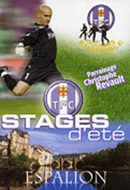
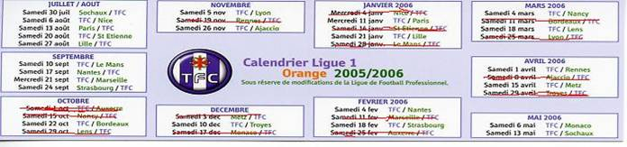

Ce dimanche 17 juillet 2005 , nous sommes tous là dès 13h30 pour le Grand départ au stage d'Espalion offert par l'association TFC à 50 enfants de salariés AZF ou proches de notre association.
Mais quel rapide regroupement dès que Christophe REVAULT , parrain du stage vient encourager tous les stagiaires : signatures, photos, poignées de mains,�et on recommence�.
Les bagages chargés, le bus prend la direction d'Espalion�.3h de route�..pour certains c'est un peu long mais des groupes se forment et on en profite pour faire connaissance.
A l'arrivée nous sommes accueillis par Jacques JULIA responsable du stage. Il fait la présentation de ses 5 moniteurs éducateurs du TFC, nous informe comment va se dérouler la semaine , puis visite des lieux : salle de réunion, réfectoire, dortoirs un pour les 10-12 ans et un pour les 12-14 ans ensuite nous nous rendons aux installations sportives mises à notre disposition par la municipalité d'Espalion: quelles belles pelouses !!!
Et c'est parti pour une semaine mais pas que du foot nous faisons aussi du VTT, canyoning, accro-branche mais malgré tout, ce n'est pas une colonie de vacance et encore moins du repos.
Une semaine inoubliable à faire connaître, avec un accueil agréable, des éducateurs supers, une organisation parfaite, de bonnes bases de foot, des activités variées, des repas excellents et en final, le vendredi, un tournoi de fin de stage où des parents sont venus nous voir évoluer. Puis cérémonie de remise des trophées et le soir coup de téléphone de Christophe Revault, ce gardien exceptionnel et homme de c�ur.
Et déjà samedi le retour, tristes de se séparer mais heureux de retrouver nos parents.
Le 13 septembre nous avons pu nous retrouver presque tous pour la présentation du DVD du stage et Christophe REVAULT était là. Nous sommes tous repartis avec sa signature sur la photo de l'équipe du TFC 2005 / 2006 et sur le DVD .
Encore merci à Jacques, Mathieu, Nathanaêl, Benoit, Nicolas, Patrick, le TFC et à l'association TFC .
A l'année prochaine.

NOUS DISPOSONS ACTUELLEMENT DE 8 ABONNEMENTS POUR LES 14 MATHS QUI
RESTENT A JOUER A TOULOUSE. ( quart de virage )
Vous pouvez soit - ACHETER L'ABONNEMENT POUR L'ANNEE
- COMMANDER DES PLACES POUR LES MATHS DE VOTRE CHOIX ( 10€ / pl )
- SOIT COMMANDER PLACE PAR PLACE ( 10€ / pl )
Le tout jusqu'à épuisement des places dont nous disposons. TELEPHONE 05 62 11 45 50 ou azf.ms@wanadoo.fr
RAPPEL : permanences tous les mardis de 10 à12h
Téléphone / répondeur : 05 62 11 45 50
Adresse é-mail : azf.ms@wanadoo.fr
Adresse postale : AZF 143 route d'Espagne
31100 Toulouse
Page 1 : Mot du président
Page 2 : texte lu lors de la cérémonie du 21 9 05
Page 3 : Commission vérité
Page 4 : Commission Mémoire
Page 6 : Commission des Activités
Page 7 : Montauban_Moissac le : 24 11 05
|